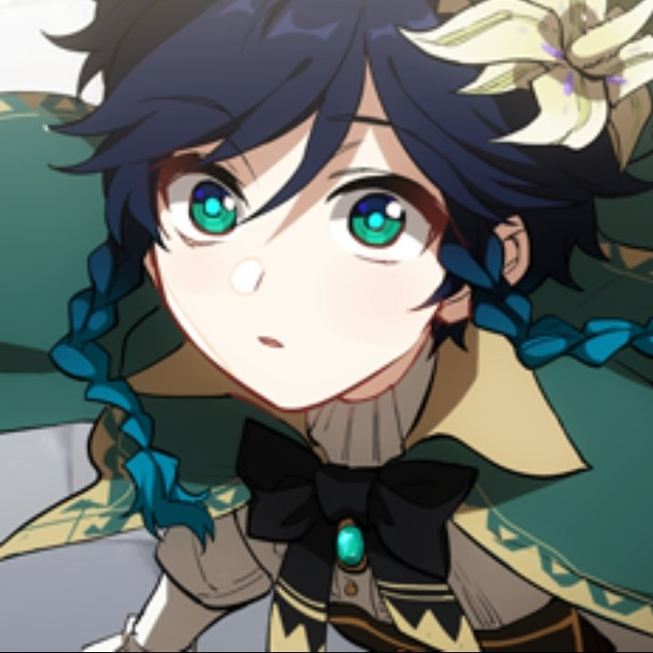

A carefree and mischievous bard who wanders the continent of Teyvat, often found playing his lyre and singing in the streets of Mondstadt.
About Venti 1
Venti is often depicted as carefree and mischievous. He enjoys spending his time wandering the streets of Mondstadt, playing his lyre, and interacting with the people of the city.
About Venti 2
As a bard, Venti is exceptionally skilled in music and singing. His melodic tunes and enchanting voice have the power to captivate audiences and evoke emotions ranging from joy to sorrow.
About Venti 3
Despite his carefree exterior, Venti possesses a deep sense of empathy and compassion for the people of Teyvat. He is quick to intervene in times of need and gives them guidance.
About Venti 4
Venti has a strong sense of justice and fairness, often taking action against those who seek to oppress or harm others. He is not afraid to challenge authority or stand up for what he believes is right.